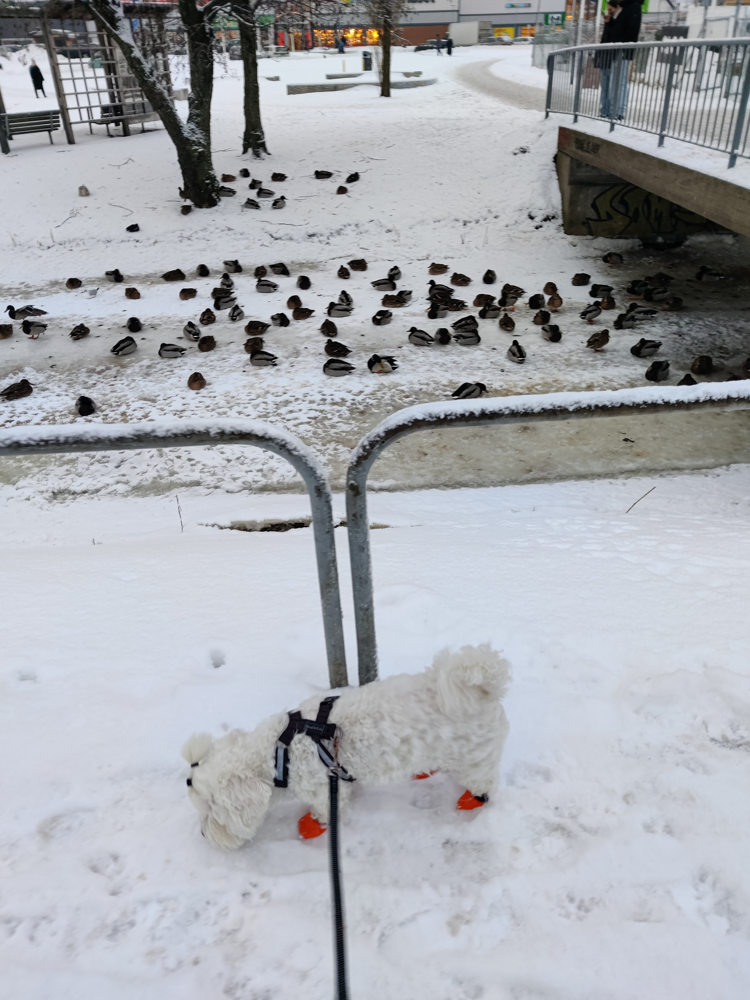

detta är brödtextens första stycke
min githubNedan är är en bild på min Fjodor i sina nya skor. I bakgrunden syns även änder.
5 spännande fakta om Fjodor:
Tro inte på allt du läser på internet. Bland dessa "fakta" finns ett fel. Vilket tror du är fabricerat? Välj rätt så får du kanske gå vidare! (Tips: använd länkarna och information från bilden.)